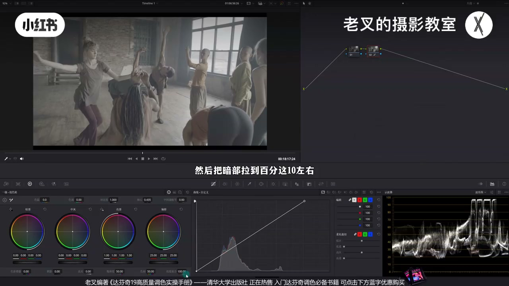
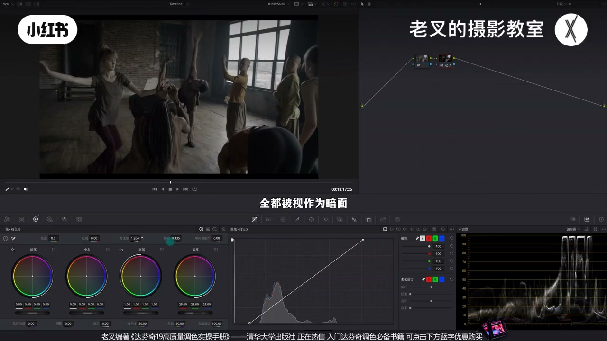
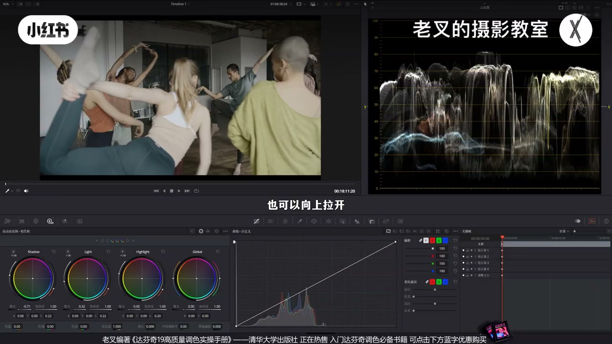
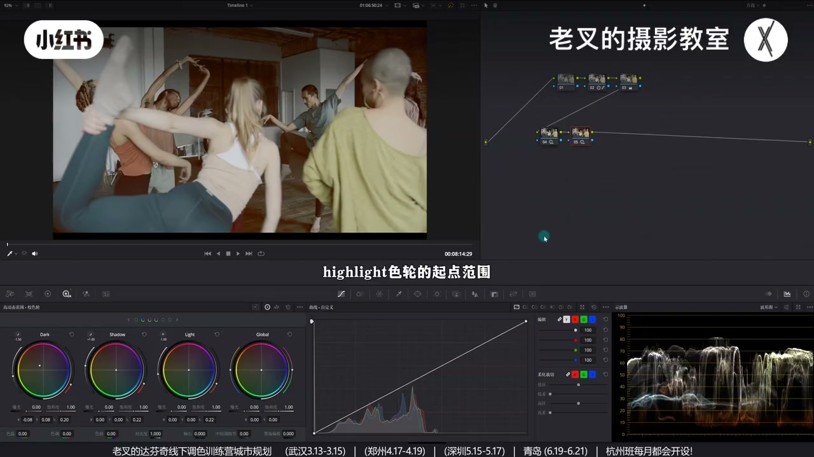
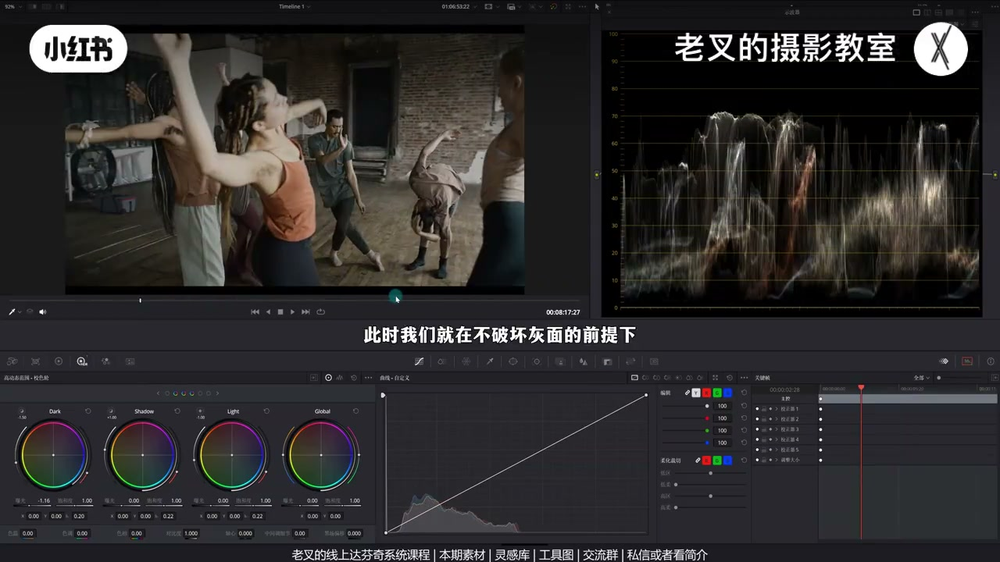
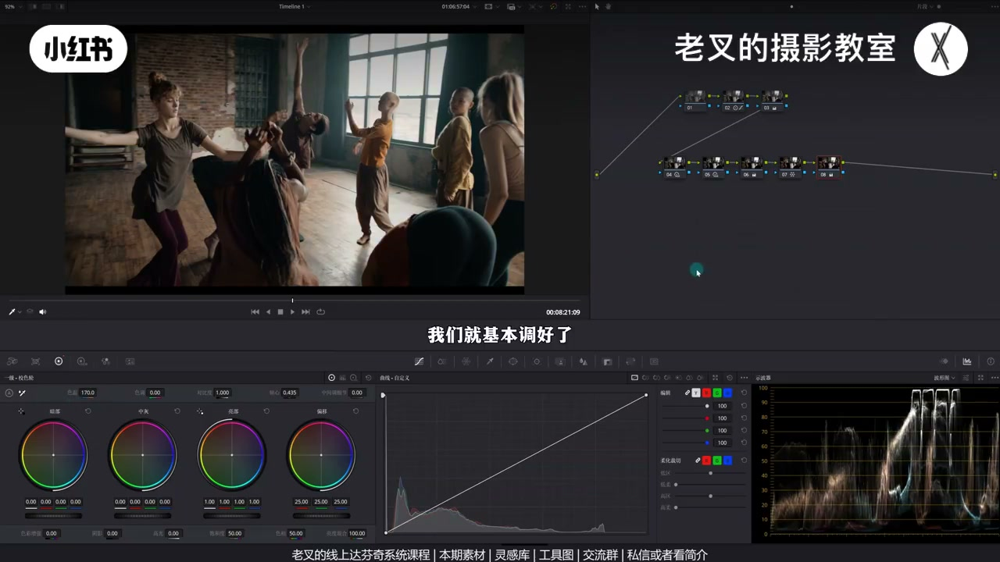

内容要点
老叉以窗光室内为例讲工具选择：还原跟过曝窗光源；加对比发灰时核心是轴心——决定谁算亮面谁算暗面，左移轴心才能展开室内层次。精细化用 HDR 拉开明暗，再用各色轮范围（点左上圆、Shift+H）独立调整：Specular 起点下移专提近窗受光，Dark 收紧专压暗部。颜色蜘蛛网靠青橙后可全局加冷或上外观。
知识结构
窗光≥90%；加对比室内仍闷→轴心左移让室内部分成亮面，再回调高光。
抬 Light、压 Shadow；近窗人物受光过平，需向上展层次。
色轮左上圆看范围；Specular 下移起点专提受光；广色域未做会选不出。
收紧 Dark 只压更暗区，灰面不动，更立体。
蜘蛛网蓝→青、黄→橙；可全局加冷；柔和/标准对比或电影感外观可选。
工具选择跟目标绑定：要展开哪一段灰阶，就用谁的起点范围。轴心决定对比度作用在谁身上；HDR 色轮优势是独立调某一亮度带。选不出范围先查色彩管理/广色域。
00:00-01:39还原与轴心：对比度作用在谁身上
达芬奇类似工具很多，怎么选？先简单还原：有明确光源则高光依据拉到90%以上，暗部约10%。做完若整体发灰，可加对比度——但默认轴心下室内可能整块变暗，并未在室内拉开反差。
对比度让亮更亮、暗更暗；谁算亮暗由轴心决定。波形从对角变 S 形时，中间不动的点即轴心。目的是展开室内：轴心左移，让室内部分被视作亮面；窗高光过亮再回调曲线高光，并略加饱和。


01:39-02:42HDR：先全局拉开，再处理近窗受光
加对比后仍偏灰：除窗特别亮外，其余层次过近。真实应越近窗越亮。可抬 Light、压 Shadow 再强化明暗。
拉时间线会发现有时最亮不是窗而是近窗人物受光，且与别处格格不入、过平。近窗受光应向上拉开（亮更亮），「暗更暗」不符逻辑。

02:42-04:23HDR 色轮范围：Specular 专提受光面
点各色轮左上圆可见调整范围，Shift+H 可保持显示。默认从暗到亮：Black、Dark、Shadow、Light、Highlight、Specular。前三偏暗部色轮，从起点起只影响暗面；后三亮部色轮只影响起点以上亮面。越靠边范围越小。
要让受光向上走，用最亮的 Specular：起点过亮会选中纯灰（无选区），把左侧白拨杆下滑，起点略暗即可选中受光再提曝光。怎么调都选不出时，检查是否做了达芬奇广色域等色彩管理。

04:23-04:53同理收紧 Dark：暗更立体、灰面不动
若整体仍偏灰，可改 Dark 范围，只影响更暗区，在不破坏灰面前提下让画面更独立立体。HDR 优势正是非常独立地调某一区域。

04:53-06:06颜色：青橙首选 + 可选外观
浏览已有色：蓝青与人物衣物橙——青橙是首选。工具任选习惯的，作者用向量把蓝靠青、黄靠橙。有冷有暖后可大胆全局加冷。
要更强风格：柔和对比度让亮暗略灰，或更强反差用其他对比；嫌麻烦可上电影感外观创造器。素材免费领取。

完整转录（286段）
以下文本由 Whisper medium 模型自动转录，可能存在少量识别误差，已尽可能修正。
打分器有非常多类似的工具
我们在调色过程中到底该如何选择
以这个画面为例
我们先给它做一下简单的还原
在上一期我们说过
如果说你的画面中有明确的光源
比如说这个位置
那么它大概率是过曝的
所以我们在还原的时候
高光依据就可以将这一部分
拉到90%以上
差不多是这个位置
然后把暗谱拉到10%左右
可是这样做完之后
你会发现整体机是发挥的厉害
因为我们虽然在调色过程中
在调色过程中
在调色过程中
在调色过程中
这才是发挥的原因
所以我们可以考虑
稍微提高一点对比度
但是提高了对比度之后
你会发现室内的部分
它变暗了
它并没有去拉开它的反差
那么这就是轴心的核心概念
我们都知道增加对比度
是让亮的更亮
暗的更暗
那是由什么因素
决定了画面中
哪一部分是亮面
哪一部分是暗面
这个因素就是轴心
当我们增加对比度的时候
原本是对角线的部分
当我们增加对角线的部分
当我们增加对角线的部分
当我们增加对角线的部分
这个因素就是轴心
当我们增加对比度的时候
原本是对角线的波形图
它变成了S形曲线
右半部分往上
也就是提亮
左半部分往下
也就是压暗
但是你会发现
中间有一个点是保持不变的
这个点就是轴心
亮于轴心的部分
被视作亮面
暗于轴心的部分
被视作暗面
我们回到之前的画面
在不改变轴心的前提下
增加对比度之后
室内的内容都变暗了
这是因为室内的物体
它的曝光太低了
全都被视作为暗面
但是我们的目的是
为了拉开室内的反差
因此我们需要向左移动一点
轴心
让室内有部分内容
被视作亮面
这样就能够让室内的部分
展开它的层次
但这样做会让窗户的高光过亮
因此我们可以把曲线的
高光部分稍微回调一点
然后再给它加一点饱和度
这样我们就还原好了
接下来我们就可以进行
精细化的调整
这个画面虽然我们
增加了对比度
但是整体还是有点发挥的
从波形图上来看
除了右上角的窗户区域
特别亮以外
其他的地方曝光层次
过于接近了
按照真实情况来说
应该是越靠近窗户越亮
越往里越暗
因此我们可以考虑
稍微提高一点HDR色轮中
Light色轮的曝光
再降低一点Shadow色轮的曝光
来让画面的明暗反差再次强化
此时你乍一看好像还不错
但是我们拉动一下时间线
到这一帧的时候
画面中最亮的不是窗户
是靠近窗户的人物
它的背光面
而这一部分的反差
又与其他的地方隔隔不入
对吧
它过于平了
我们要拉开这一部分
受光面的反差
也就是让这一部分的波形图
再次展开
展开的方式有很多
可以是上下拉开
也可以向上拉开
或者是向下拉开
分别代表着
亮的更亮 暗的更暗
或者是亮的更亮
或者是暗的更暗
我们刚刚说过
越靠近窗户自然就越亮
因此这一部分的受光面
让暗的更暗就不符合逻辑了
只能让它上半部分往上走
可是这么小的范围
我们该怎么去精准的调整呢
我们看到HDR色轮
在HDR色轮的每个色轮
左上角有一个小圆圈
点击这个圆
就能够看到这个色轮
对应的调整范围
按住Shift加H打开突出显示
可以保持这个范围的显示
HDR色轮的默认排布中
从暗到亮分别是
Black色轮
Dark色轮
Shadow色轮
Light色轮和Highlight色轮
以及Specular色轮
前三个都属于亮部色轮
它们从起点范围开始
只影响暗面
所有的调整都不会改变
亮于它们起点的内容
比如说我们用Dark色轮
给暗部加一点点红色
看到画面暗部加了红
但是近景处人物的受光面
不会受到任何的影响
而至于Light
Highlight和Specular色轮
则是亮部色轮
只会影响到
从起点范围开始的亮面
根据HDR色轮默认色轮的排布
越往两边排的色轮
影响的范围越小
也就是Highlight色轮的起点范围
要亮于Light色轮的范围
了解了这个
我们再一次重复一下
我们的目的
我们是希望让这一部分的
曝光网上走一点
向上拉开层次
因此我们要用到亮部色轮中
最亮的Specular色轮
点击Specular色轮
左上角的圆圈
此时你会发现
画面变成了纯灰色
也就代表着
没有任何区域被选中
这是因为Specular色轮的
起点过于亮了
我们可以将这个色轮
左侧白色拨杆的滑块
稍微往下调一点
让Specular色轮的起点范围
能够稍微暗一点
这样呢就能够
选中人物的受光面
但是啊
如果说你发现你怎么改变
Specular色轮的范围
你都选不出东西的话
那么你要检查
你的色彩管理是否做对了
是否做了达芬吉的广色语
然后呢
我们选好了范围之后呢
就可以给它稍微提高一点曝光
此时你会发现
人物的受光面层次增加了
对吧
我们拉到这一针
你会发现
除了最亮的窗户以外
其余的灰面和暗面
不会受到任何的影响
这就是HTA色轮的优势
可以非常独立的
调整某一个区域
然后呢
我觉得曝光
可能稍微有一点灰
因此呢
我们可以利用相同的思路
改变一下Dark色轮的范围
让它只影响到
破坏灰面的前提下
让整体画面变得更加独立
更加立体
效果还是非常明显的
对吧
素材我也传到了
现场分享平台
大家可以来免费领取了
之后一起练习一下
私信或是看我简介就行
还有达芬吉的线上系统课程
和线下调色训练营
接下来呢
我们就可以动颜色
我调到这里的时候
发现还原的时候
薄度加得有点不够
所以我又补了一点
然后呢
我们浏览一下画面
画面中已有的颜色
有谁
有这些蓝色青色
和人物以及衣服的橙色
对吧
那有这两大类颜色
青橙色的就是首选
我们要让这些颜色
往青色和橙色方向靠近
所以我们要改变的是
他们的色相
对吧
改变色相的工具有很多
你可以选择
你习惯的那一个
我选的是老板的蜘蛛网
把蓝色往青色方向走
黄色往橙色方向走
这样呢
就能够快速的做出来
青橙色的
此时画面中
我们把冷与暖的颜色
都做出来了
那所以我们就可以
大胆的给全篇富裕颜色
我们可以再加一个节点
给画面整体加点冷
效果也是不错的
对吧
冷当然也行
你可以根据自己的喜好来
那到此呢
我们就基本调好了
可以与还原后的画面
做一下对比
如果说你还想要
更强的风格化
那么你可以用柔和对比度
来让暗部和亮部
稍微带点灰
或者呢
你喜欢反差再强一点的
那就来一个
左右左右对比度
都是可以的
如果你嫌麻烦
那就干脆上一个
电影感外观冲突器
效果也是非常不错的
还是很简单的
对吧
素材呢大家别忘了领取
讲到这里
如果你觉得你有帮助的话
还希望多多赞联
好了这期就到这里
拜拜哟